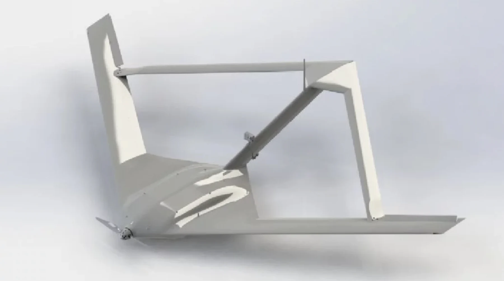
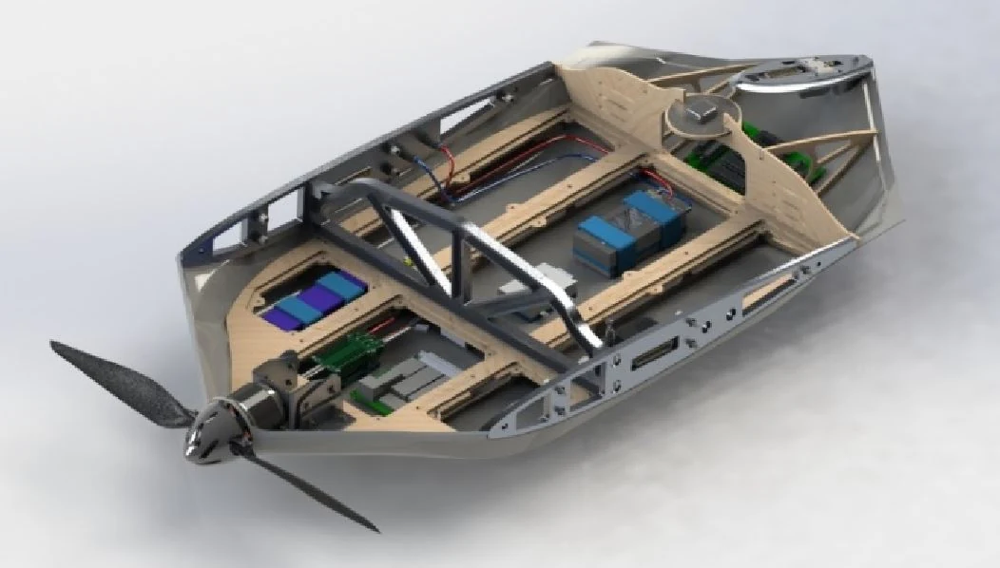

Centre for Aerospace Research · Mechanical Engineering Intern
Boeing Sensorcraft
Given the outer shape of the aircraft, I designed all internal and external components of this joined-wing aircraft including the composite layup, internal structure, integrated electronics, and custom-machined 6061 interfaces to secure everything together. This 3 m wingspan, small-scale aircraft was used to develop a quantitative model of the buckling behavior of the aft wings in flight.


1 / 2